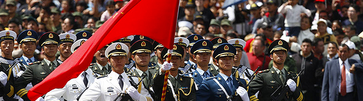
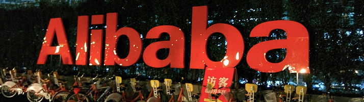
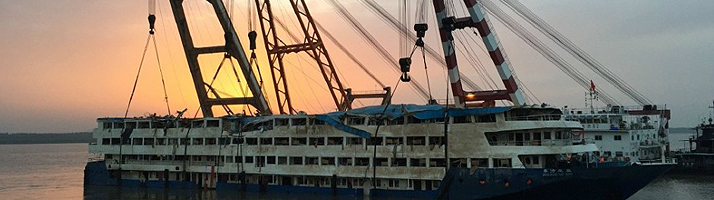

首页 »
体育新闻
7
Jun,15
欧冠-拉基蒂奇闪击苏神内马尔破门 巴萨3-1击败尤文
凤凰体育讯 北京时间6月7日凌晨2点45分(德国当地时间6日20时45分)，第60届冠军杯决赛在柏林奥林匹克球场打响，最终，巴萨3-1击败尤文图斯。巴塞罗那上半时1-0领先尤文图斯。开场203秒，伊涅斯塔助攻，拉基蒂奇打进巴萨欧冠决赛最快进球。下半场，莫拉塔一度扳平比分。但梅西的射门造成布冯脱手，苏亚雷斯补射完成反超。最终，内马尔帮助巴萨锁定3-1胜局，收获赛季三冠王以及队史第5座欧冠。
查看详细
8
Jun,15
“我是歌手”A-lin 九月深圳开“声呐”
深圳特区报讯 （记者 孟迷）因参加第三季《我是歌手》人气暴增的台湾歌手A-Lin黄丽玲将于9月19日首度在深圳湾体育馆“春茧”举办“Sonar声呐”世界巡回演唱会。演唱会于7日正式开票。
查看详细
9
May,15

中国三军仪仗队亮相红场阅兵
当地时间5月9日上午10:00，俄罗斯纪念卫国战争胜利70周年阅兵式正式在莫斯科红场举行。据悉，本次阅兵有超过15000名俄罗斯士兵、1300名外国士兵、200辆装甲车辆和150架战斗机参加，将成为史上最大规模的红场阅兵。图为当地时间2015年5月9日，俄罗斯莫斯科，红场阅兵现场，中国解放军三军仪仗队亮相红场。
查看详细
15
Dec,14

阿里巴巴市值超越纳斯达克中概股市值总和
截至12月12日美股收盘，阿里巴巴股价上涨0.13%，报收105.11美元，至此阿里巴巴总市值为2613亿美元。与此同时，作为近年来中国科技类股票以及中小型企业主要上市集中地——纳斯达克交易所，其中概股数量已达112只。如果以12日收盘价计算，上述112只个股市值总和为1956.20亿元。也就是说目前阿里巴巴总市值已经超越纳斯达克交易所中上市中概股市值总和。
查看详细
9
Jun,15

东方之星清理验收完毕 船体被封存
中新社北京6月8日电(记者周音)记者8日从中国交通运输部获悉，搜寻人员继续对“东方之星”轮逐层逐舱进行排查清理。长江航务管理局、解放军、荆州市政府、荆州市武警消防支队、重庆市万州区政府及船公司法人代表共同组成联合验收组，对难船现场排查清理工作进行了验收，验收通过后贴上了封条。
查看详细
8
Jun,15
G7峰会在德国举行
7日，在德国巴伐利亚州南部山区小镇加米施－帕滕基兴的埃尔毛宫酒店，欧洲理事会主席图斯克、日本首相安倍晋三、加拿大总理哈珀、美国总统奥巴马、德国总理默克尔、法国总统奥朗德、英国首相卡梅伦、意大利总理伦齐和欧盟委员会主席容克(从左至右)在会议前合影。
查看详细
1
2
3
下一页